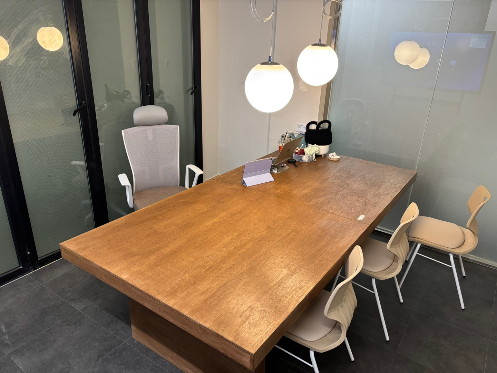
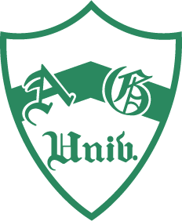
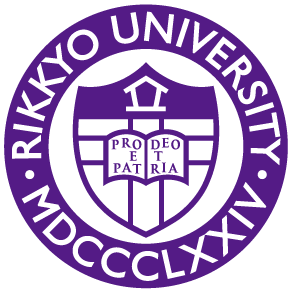

와세다 출신 원장 직강
와세다 출신 원장이 직접 가르치는 일본어 입시 수업.

01 / WHY TANSO JUKU
와세다 출신 원장이 직접 가르치는 일본어 입시 수업.
학생의 현재 수준과 목표에 맞춰 진행하는 일대일 수업.
EJU·JLPT·본고사까지, 입시에 필요한 준비를 함께합니다.
02 / TEACHERS
03 / PROGRAMS
04 / RESULTS & REVIEWS
총 51명 합격
탄소쥬크 합격 실적

아오야마학원대학교종합문화정책학부
릿쿄대학교 전체 이미지 보기 ↗
전체 이미지 보기 ↗ 전체 이미지 보기 ↗
전체 이미지 보기 ↗ 전체 이미지 보기 ↗
전체 이미지 보기 ↗ 전체 이미지 보기 ↗
전체 이미지 보기 ↗ 전체 이미지 보기 ↗
전체 이미지 보기 ↗ 전체 이미지 보기 ↗
전체 이미지 보기 ↗ 전체 이미지 보기 ↗
전체 이미지 보기 ↗ 전체 이미지 보기 ↗
전체 이미지 보기 ↗ 전체 이미지 보기 ↗
전체 이미지 보기 ↗ 전체 이미지 보기 ↗
전체 이미지 보기 ↗목표를 향해 준비한 시간과 합격의 기쁨을 학생들의 이야기로 만나보세요.
05 / INTERVIEWS
와세다대학교
와세다 합격생이 전하는 일본 입시 준비와 공부 이야기를 들어봅니다.
유튜브에서 보기 (새 창)와세다대학교 스포츠과학부
재학생에게 듣는 스포츠과학부의 특징과 입시·면접 경험.
유튜브에서 보기 (새 창)메이지대학교
군 복무 후 다시 도전해 메이지대학교에 합격한 준비 과정을 만나보세요.
유튜브에서 보기 (새 창)06 / CONSULTATION
온라인 상담 신청
네이버폼 상담 신청 (새 창)수업과 방문 상담 문의
0507-1399-0632월~토 · 10:00~21:00메시지로 상담 문의
카카오톡 상담 (새 창)